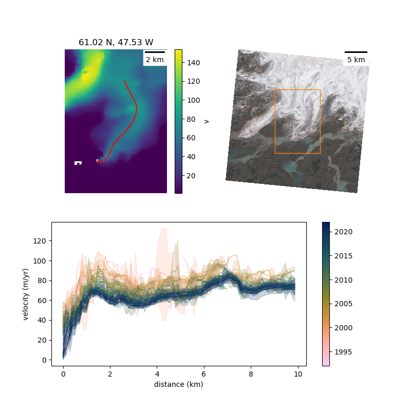
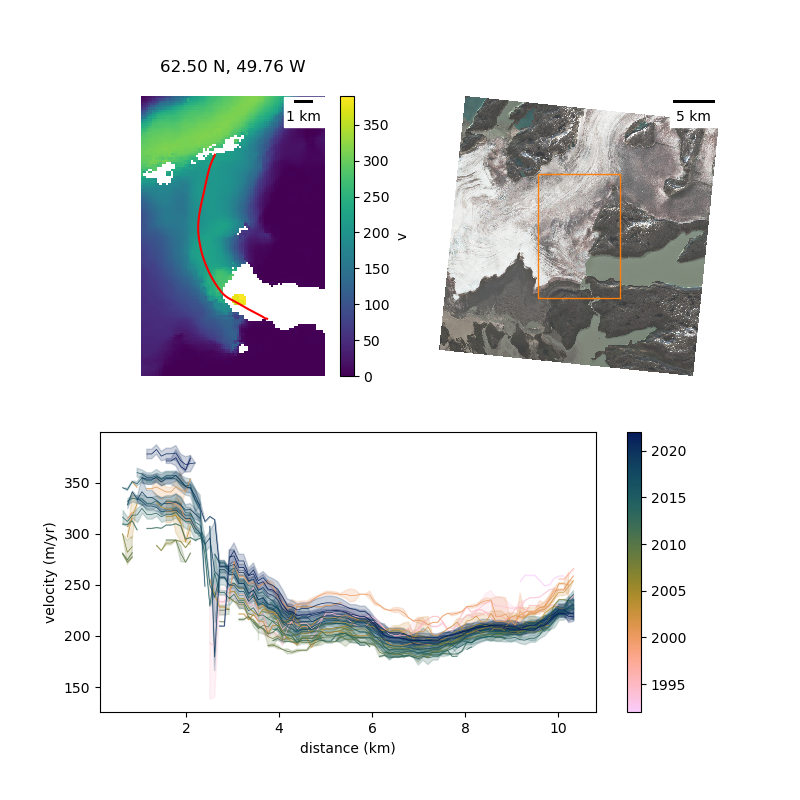
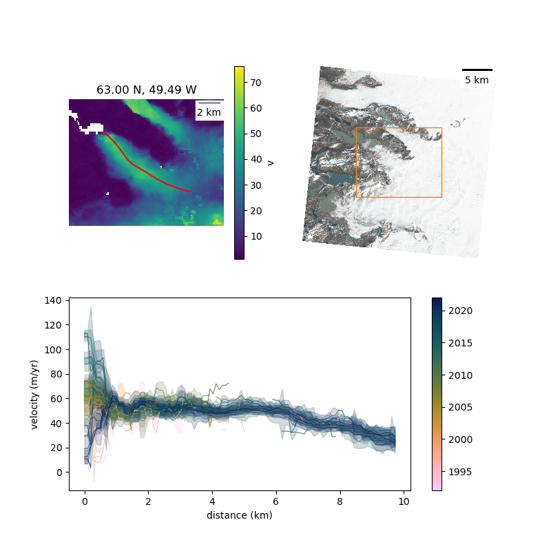
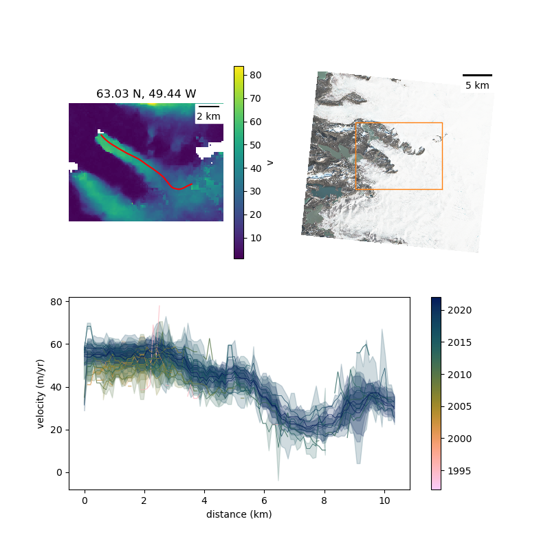
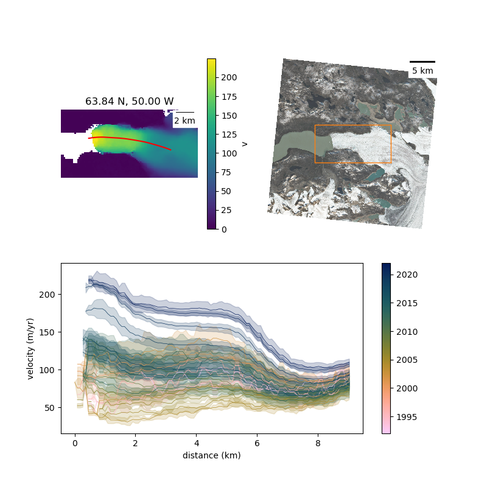
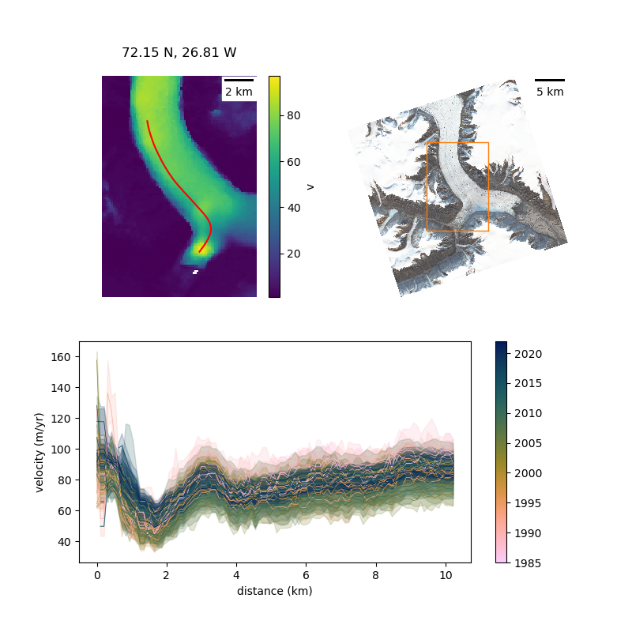

ice surface velocity
method
a point near the terminus
- point is buffered by 8-10 km and the ITS_LIVE velocity cubes that intersect this area identified
cube processing
- cubes clipped to area and filtered:
- 335 days <=
date_dt < 395 days
- this selects for velocity fields that approximate average annual velocity
- the v_x and v_y components are filtered independently of one another
- values that are +/- 5 * MAD are removed
- this filtering is similar to that used by nanni et al., 2023
centreline creation
- the v_x and v_y component fields from the most recent complete year (2022) are used to generate the (centre) flowline that extends up/down from input point.
- these flowlines are exported and manually tidied.
sampling
- the filtered velocity cubes are sampled at 100 points evenly distributed along the length of the flowline
- these samples are grouped by the year of their
mid_date (the mid-date of the two images used to generate the velocity field) and the median and (normalized) median absolute deviation calculated.
still to do (/would like to do):
- timeseries of velocities near the terminus with
date_dt <= 30 days ish (for seeing seasonal variability)
- look at timing of any speed up / slow downs
- look at latitude & east/west as potential
- bed / surface topo
- something that looks a bit like ashmore et al., 2022 for modes of variability
results
outlet #0

- slow flowing
- behaving like a land-terminating outlet
- velocity decreases toward the terminus
- suggesting lake has minimal influence
- has slowed over the last 20 years
outlet #1

- moderate speed, with a very slight uptick in velocity towards the terminus
- lake likely has some influence
- has slowed in recent years
outlet #2

- slowed in recent years
- curious velocity profile
- lake might have some influence here
outlet #3

- this outlet is part ice-sheet fed, part ice-cap fed
- despite the reasonably sharp curve, maintains high (ish) velocity
- lake is clearly doing something
- has accelerated in recent years
- upglacier (6-10 km) however, it is presently flowing slower than pre-2000
outlet #4

- slow flowing oulet
- velocity used to increase toward the terminus ~2015
- now velocity profile more akin to land-terminating
outlet #5

- slow flowing
- slight uptick in velocity toward terminus
- very modest acceleration in recent years
outlet #6

- we know all about this one
outlet #7

- interesting
- has slowed down since the 1990s
- but the profile does show a tick up in velocity toward the terminus since ~2018
- and has accelerated since early 2010s
- NOTE: end of centreline might not be bang on the terminus - hence the drop off at ~0.5 km
outlet #8

- little distributary, which (surprisingly) does have an area near the terminus of elevated surface velocity
- which have increased since the 2000s
- but aren't greater than those measured in the 1990s
outlet #11

outlet #12